pyvista.Renderer#
- class Renderer(parent, border=True, border_color='w', border_width=2.0)[source]#
Renderer class.
- property actors#
Return a dictionary of actors assigned to this renderer.
- add_actor(uinput, reset_camera=False, name=None, culling=False, pickable=True, render=True, remove_existing_actor=True)[source]#
Add an actor to render window.
Creates an actor if input is a mapper.
- Parameters:
- uinput
vtk.vtkMapperorvtk.vtkActor Vtk mapper or vtk actor to be added.
- reset_camerabool,
optional Resets the camera when
True.- name
str,optional Name to assign to the actor. Defaults to the memory address.
- culling
str,optional Does not render faces that are culled. Options are
'front'or'back'. This can be helpful for dense surface meshes, especially when edges are visible, but can cause flat meshes to be partially displayed. DefaultFalse.- pickablebool,
optional Whether to allow this actor to be pickable within the render window.
- renderbool,
optional If the render window is being shown, trigger a render after adding the actor.
- remove_existing_actorbool,
optional Removes any existing actor if the named actor
nameis already present.
- uinput
- Returns:
- actor
vtk.vtkActororpyvista.Actor The actor.
- actor_properties
vtk.Properties Actor properties.
- actor
- add_axes(interactive=None, line_width=2, color=None, x_color=None, y_color=None, z_color=None, xlabel='X', ylabel='Y', zlabel='Z', labels_off=False, box=None, box_args=None, viewport=(0, 0, 0.2, 0.2), marker_args=None, **kwargs)[source]#
Add an interactive axes widget in the bottom left corner.
- Parameters:
- interactivebool,
optional Enable this orientation widget to be moved by the user.
- line_width
int,optional The width of the marker lines.
- color
color_like,optional Color of the labels.
- x_color
color_like,optional Color used for the x axis arrow. Defaults to theme axes parameters.
- y_color
color_like,optional Color used for the y axis arrow. Defaults to theme axes parameters.
- z_color
color_like,optional Color used for the z axis arrow. Defaults to theme axes parameters.
- xlabel
str,optional Text used for the x axis.
- ylabel
str,optional Text used for the y axis.
- zlabel
str,optional Text used for the z axis.
- labels_offbool,
optional Enable or disable the text labels for the axes.
- boxbool,
optional Show a box orientation marker. Use
box_argsto adjust. Seepyvista.create_axes_orientation_box()for details.- box_args
dict,optional Parameters for the orientation box widget when
box=True. See the parameters ofpyvista.create_axes_orientation_box().- viewport
tuple,optional Viewport
(xstart, ystart, xend, yend)of the widget.- marker_args
dict,optional Marker arguments.
Deprecated since version 0.37.0: Use
**kwargsfor passing parameters for the orientation marker widget. See the parameters ofpyvista.create_axes_marker().- **kwargs
dict,optional Used for passing parameters for the orientation marker widget. See the parameters of
pyvista.create_axes_marker().
- interactivebool,
- Returns:
vtk.vtkAxesActorAxes actor.
Examples
Show axes without labels and with thick lines.
>>> import pyvista >>> pl = pyvista.Plotter() >>> actor = pl.add_mesh(pyvista.Box(), show_edges=True) >>> _ = pl.add_axes(line_width=5, labels_off=True) >>> pl.show()
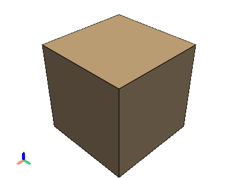 Use the axes orientation widget instead of the default arrows.
>>> pl = pyvista.Plotter() >>> actor = pl.add_mesh(pyvista.Sphere()) >>> _ = pl.add_axes(box=True) >>> pl.show()
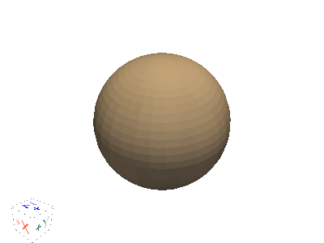 Specify more parameters for the axes marker.
>>> import pyvista >>> pl = pyvista.Plotter() >>> actor = pl.add_mesh(pyvista.Box(), show_edges=True) >>> _ = pl.add_axes( ... line_width=5, ... cone_radius=0.6, ... shaft_length=0.7, ... tip_length=0.3, ... ambient=0.5, ... label_size=(0.4, 0.16) ... ) >>> pl.show()
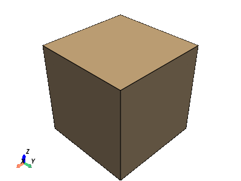
- add_axes_at_origin(x_color=None, y_color=None, z_color=None, xlabel='X', ylabel='Y', zlabel='Z', line_width=2, labels_off=False)[source]#
Add axes actor at origin.
- Parameters:
- x_color
color_like,optional The color of the x axes arrow.
- y_color
color_like,optional The color of the y axes arrow.
- z_color
color_like,optional The color of the z axes arrow.
- xlabel
str,optional The label of the x axes arrow.
- ylabel
str,optional The label of the y axes arrow.
- zlabel
str,optional The label of the z axes arrow.
- line_width
int,optional Width of the arrows.
- labels_offbool,
optional Disables the label text when
True.
- x_color
- Returns:
vtk.vtkAxesActorActor of the axes.
Examples
>>> import pyvista >>> pl = pyvista.Plotter() >>> _ = pl.add_mesh(pyvista.Sphere(center=(2, 0, 0)), color='r') >>> _ = pl.add_mesh(pyvista.Sphere(center=(0, 2, 0)), color='g') >>> _ = pl.add_mesh(pyvista.Sphere(center=(0, 0, 2)), color='b') >>> _ = pl.add_axes_at_origin() >>> pl.show()
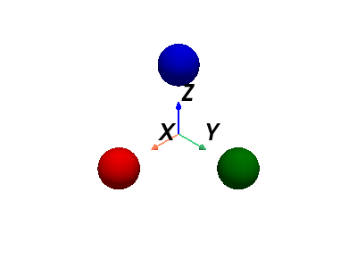
- add_blurring()[source]#
Add blurring.
This can be added several times to increase the degree of blurring.
Examples
Add two blurring passes to the plotter and show it.
>>> import pyvista as pv >>> pl = pv.Plotter() >>> _ = pl.add_mesh(pv.Sphere(), show_edges=True) >>> pl.add_blurring() >>> pl.add_blurring() >>> pl.show()
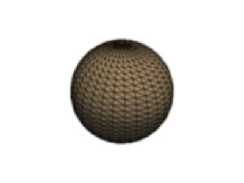 See Blurring for a full example using this method.
- add_border(color='white', width=2.0)[source]#
Add borders around the frame.
- Parameters:
- color
color_like,optional Color of the border.
- width
float,optional Width of the border.
- color
- Returns:
vtk.vtkActor2DBorder actor.
- add_bounding_box(color='grey', corner_factor=0.5, line_width=None, opacity=1.0, render_lines_as_tubes=False, lighting=None, reset_camera=None, outline=True, culling='front')[source]#
Add an unlabeled and unticked box at the boundaries of plot.
Useful for when wanting to plot outer grids while still retaining all edges of the boundary.
- Parameters:
- color
color_like,optional Color of all labels and axis titles. Default white. Either a string, rgb sequence, or hex color string. For example:
color='white'color='w'color=[1.0, 1.0, 1.0]color='#FFFFFF'
- corner_factor
float,optional This is the factor along each axis to draw the default box. Default is 0.5 to show the full box.
- line_width
float,optional Thickness of lines.
- opacity
float,optional Opacity of mesh. Default 1.0 and should be between 0 and 1.
- render_lines_as_tubesbool,
optional Show lines as thick tubes rather than flat lines. Control the width with
line_width.- lightingbool,
optional Enable or disable directional lighting for this actor.
- reset_camerabool,
optional Reset camera position when
Trueto include all actors.- outlinebool, default:
True Default is
True. whenFalse, a box with faces is shown with the specified culling.- culling
str,optional Does not render faces that are culled. Options are
'front'or'back'. Default is'front'for bounding box.
- color
- Returns:
vtk.vtkActorVTK actor of the bounding box.
Examples
>>> import pyvista >>> pl = pyvista.Plotter() >>> _ = pl.add_mesh(pyvista.Sphere()) >>> _ = pl.add_bounding_box(line_width=5, color='black') >>> pl.show()
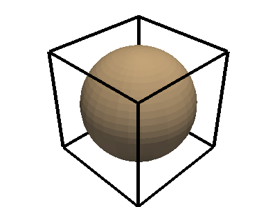
- add_chart(chart, *charts)[source]#
Add a chart to this renderer.
- Parameters:
Examples
>>> import pyvista >>> chart = pyvista.Chart2D() >>> _ = chart.plot(range(10), range(10))
>>> pl = pyvista.Plotter() >>> pl.add_chart(chart) >>> pl.show()
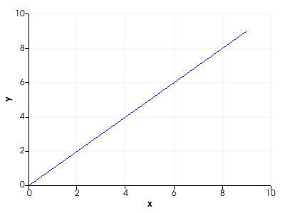
- add_floor(face='-z', i_resolution=10, j_resolution=10, color=None, line_width=None, opacity=1.0, show_edges=False, lighting=False, edge_color=None, reset_camera=None, pad=0.0, offset=0.0, pickable=False, store_floor_kwargs=True)[source]#
Show a floor mesh.
This generates planes at the boundaries of the scene to behave like floors or walls.
- Parameters:
- face
str,optional The face at which to place the plane. Options are (
'-z','-y','-x','+z','+y', and'+z'). Where the-/+sign indicates on which side of the axis the plane will lie. For example,'-z'would generate a floor on the XY-plane and the bottom of the scene (minimum z).- i_resolution
int,optional Number of points on the plane in the i direction.
- j_resolution
int,optional Number of points on the plane in the j direction.
- color
color_like,optional Color of all labels and axis titles. Default gray. Either a string, rgb list, or hex color string.
- line_width
int,optional Thickness of the edges. Only if
show_edgesisTrue.- opacity
float,optional The opacity of the generated surface.
- show_edgesbool,
optional Flag on whether to show the mesh edges for tiling.
- line_width
float,optional Thickness of lines. Only valid for wireframe and surface representations. Default
None.- lightingbool,
optional Enable or disable view direction lighting. Default
False.- edge_color
color_like,optional Color of of the edges of the mesh.
- reset_camerabool,
optional Resets the camera when
Trueafter adding the floor.- pad
float,optional Percentage padding between 0 and 1.
- offset
float,optional Percentage offset along plane normal.
- pickablebool,
optional Make this floor actor pickable in the renderer.
- store_floor_kwargsbool,
optional Stores the keyword arguments used when adding this floor. Useful when updating the bounds and regenerating the floor.
- face
- Returns:
vtk.vtkActorVTK actor of the floor.
Examples
Add a floor below a sphere and plot it.
>>> import pyvista >>> pl = pyvista.Plotter() >>> actor = pl.add_mesh(pyvista.Sphere()) >>> actor = pl.add_floor() >>> pl.show()
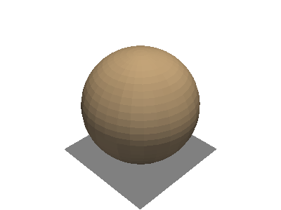
- add_legend(labels=None, bcolor=(0.5, 0.5, 0.5), border=False, size=(0.2, 0.2), name=None, loc='upper right', face='triangle')[source]#
Add a legend to render window.
Entries must be a list containing one string and color entry for each item.
- Parameters:
- labels
list,optional When set to
None, uses existing labels as specified byadd_meshadd_linesadd_points
List containing one entry for each item to be added to the legend. Each entry must contain two strings, [label, color], where label is the name of the item to add, and color is the color of the label to add.
- bcolor
color_like,optional Background color, either a three item 0 to 1 RGB color list, or a matplotlib color string (e.g.
'w'or'white'for a white color). If None, legend background is disabled.- borderbool,
optional Controls if there will be a border around the legend. Default False.
- sizesequence,
optional Two float sequence, each float between 0 and 1. For example
(0.1, 0.1)would make the legend 10% the size of the entire figure window.- name
str,optional The name for the added actor so that it can be easily updated. If an actor of this name already exists in the rendering window, it will be replaced by the new actor.
- loc
str,optional Location string. One of the following:
'upper right''upper left''lower left''lower right''center left''center right''lower center''upper center''center'
- face
strorpyvista.PolyData,optional Face shape of legend face. One of the following:
None:
NoneLine:
"-"or"line"Triangle:
"^"or'triangle'Circle:
"o"or'circle'Rectangle:
"r"or'rectangle'Custom:
pyvista.PolyData
Default is
'triangle'. PassingNoneremoves the legend face. A custom face can be created usingpyvista.PolyData. This will be rendered from the XY plane.
- labels
- Returns:
vtk.vtkLegendBoxActorActor for the legend.
Examples
Create a legend by labeling the meshes when using
add_mesh>>> import pyvista >>> from pyvista import examples >>> sphere = pyvista.Sphere(center=(0, 0, 1)) >>> cube = pyvista.Cube() >>> plotter = pyvista.Plotter() >>> _ = plotter.add_mesh(sphere, 'grey', smooth_shading=True, label='Sphere') >>> _ = plotter.add_mesh(cube, 'r', label='Cube') >>> _ = plotter.add_legend(bcolor='w', face=None) >>> plotter.show()
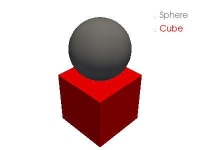 Alternatively provide labels in the plotter.
>>> plotter = pyvista.Plotter() >>> _ = plotter.add_mesh(sphere, 'grey', smooth_shading=True) >>> _ = plotter.add_mesh(cube, 'r') >>> legend_entries = [] >>> legend_entries.append(['My Mesh', 'w']) >>> legend_entries.append(['My Other Mesh', 'k']) >>> _ = plotter.add_legend(legend_entries) >>> plotter.show()
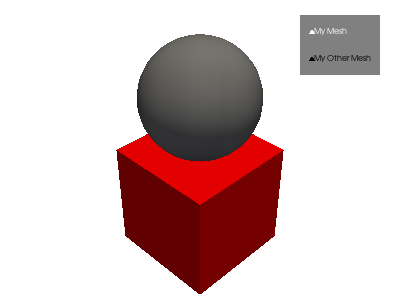
- add_light(light)[source]#
Add a light to the renderer.
- Parameters:
- light
vtk.vtkLightorpyvista.Light Light to add.
- light
- add_orientation_widget(actor, interactive=None, color=None, opacity=1.0)[source]#
Use the given actor in an orientation marker widget.
Color and opacity are only valid arguments if a mesh is passed.
- Parameters:
- actor
vtk.vtkActororpyvista.DataSet The mesh or actor to use as the marker.
- interactivebool,
optional Control if the orientation widget is interactive. By default uses the value from
pyvista.global_theme.interactive.- color
color_like,optional The color of the actor. This only applies if
actoris apyvista.DataSet.- opacity
intorfloat,optional Opacity of the marker.
- actor
- Returns:
vtk.vtkOrientationMarkerWidgetOrientation marker widget.
Examples
Use an Arrow as the orientation widget.
>>> import pyvista >>> pl = pyvista.Plotter() >>> actor = pl.add_mesh(pyvista.Cube(), show_edges=True) >>> actor = pl.add_orientation_widget(pyvista.Arrow(), color='r') >>> pl.show()
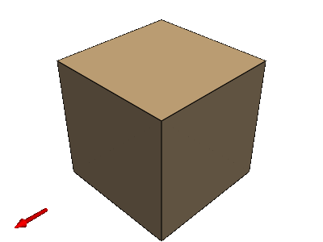
- property axes_enabled#
Return
Truewhen axes are enabled.Examples
>>> import pyvista >>> pl = pyvista.Plotter() >>> pl.hide_axes() >>> pl.renderer.axes_enabled False

- property background_color#
Return the background color of this renderer.
- property border_color#
Return the border color.
- property border_width#
Return the border width.
- property bounds#
Return the bounds of all actors present in the rendering window.
- property camera#
Return the active camera for the rendering scene.
- property camera_position#
Return camera position of active render window.
- Returns:
pyvista.CameraPositionCamera position.
- property center#
Return the center of the bounding box around all data present in the scene.
- Returns:
listCartesian coordinates of the center.
- deep_clean(render=False)[source]#
Clean the renderer of the memory.
- Parameters:
- renderbool,
optional Render the render window after removing the bounding box (if applicable).
- renderbool,
- disable_depth_of_field()[source]#
Disable depth of field plotting.
Examples
>>> import pyvista as pv >>> pl = pv.Plotter(lighting="three lights") >>> pl.enable_depth_of_field() >>> pl.disable_depth_of_field()

- disable_eye_dome_lighting()[source]#
Disable eye dome lighting (EDL).
Examples
>>> import pyvista >>> pl = pyvista.Plotter() >>> pl.disable_eye_dome_lighting()

Disable hidden line removal.
- disable_parallel_projection()[source]#
Reset the camera to use perspective projection.
Examples
>>> import pyvista >>> from pyvista import demos >>> pl = pyvista.demos.orientation_plotter() >>> pl.disable_parallel_projection() >>> pl.show()
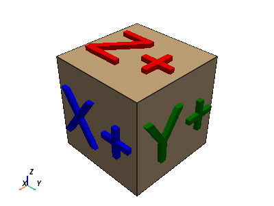
- disable_shadows()[source]#
Disable shadows.
Examples
>>> import pyvista >>> pl = pyvista.Plotter() >>> pl.disable_shadows()

- enable_anti_aliasing(aa_type='fxaa')[source]#
Enable anti-aliasing.
- Parameters:
- aa_type
str, default: ‘fxaa’ Anti-aliasing type. Either
"fxaa"or"ssaa".
- aa_type
- enable_depth_of_field(automatic_focal_distance=True)[source]#
Enable depth of field plotting.
- Parameters:
- automatic_focal_distancebool,
optional Use automatic focal distance calculation. When enabled, the center of the viewport will always be in focus regardless of where the focal point is. Default
True.
- automatic_focal_distancebool,
Examples
Create five spheres and demonstrate the effect of depth of field.
>>> import pyvista as pv >>> from pyvista import examples >>> pl = pv.Plotter(lighting="three lights") >>> pl.background_color = "w" >>> for i in range(5): ... mesh = pv.Sphere(center=(-i * 4, 0, 0)) ... color = [0, 255 - i*20, 30 + i*50] ... _ = pl.add_mesh( ... mesh, ... show_edges=False, ... pbr=True, ... metallic=1.0, ... color=color ... ) >>> pl.camera.zoom(1.8) >>> pl.camera_position = [ ... (4.74, 0.959, 0.525), ... (0.363, 0.3116, 0.132), ... (-0.088, -0.0075, 0.996), ... ] >>> pl.enable_depth_of_field() >>> pl.show()
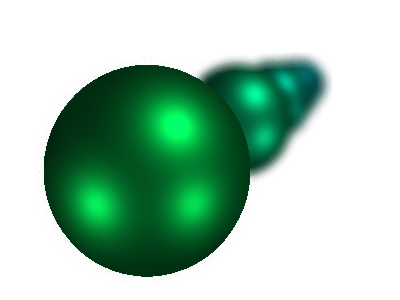 See Depth of Field Plotting for a full example using this method.
- enable_depth_peeling(number_of_peels=None, occlusion_ratio=None)[source]#
Enable depth peeling to improve rendering of translucent geometry.
- Parameters:
- number_of_peels
int,optional The maximum number of peeling layers. Initial value is 4 and is set in the
pyvista.global_theme. A special value of 0 means no maximum limit. It has to be a positive value.- occlusion_ratio
float,optional The threshold under which the depth peeling algorithm stops to iterate over peel layers. This is the ratio of the number of pixels that have been touched by the last layer over the total number of pixels of the viewport area. Initial value is 0.0, meaning rendering has to be exact. Greater values may speed up the rendering with small impact on the quality.
- number_of_peels
- Returns:
- bool
If depth peeling is supported.
- enable_eye_dome_lighting()[source]#
Enable eye dome lighting (EDL).
- Returns:
vtk.vtkOpenGLRendererVTK renderer with eye dome lighting pass.
Examples
>>> import pyvista >>> pl = pyvista.Plotter() >>> _ = pl.enable_eye_dome_lighting()

Enable hidden line removal.
- enable_parallel_projection()[source]#
Enable parallel projection.
The camera will have a parallel projection. Parallel projection is often useful when viewing images or 2D datasets.
Examples
>>> import pyvista >>> from pyvista import demos >>> pl = pyvista.demos.orientation_plotter() >>> pl.enable_parallel_projection() >>> pl.show()
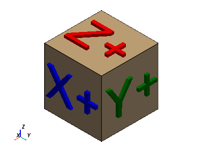
- enable_shadows()[source]#
Enable shadows.
Examples
First, plot without shadows enabled (default)
>>> import pyvista >>> mesh = pyvista.Sphere() >>> pl = pyvista.Plotter(lighting='none', window_size=(1000, 1000)) >>> light = pyvista.Light() >>> light.set_direction_angle(20, -20) >>> pl.add_light(light) >>> _ = pl.add_mesh(mesh, color='white', smooth_shading=True) >>> _ = pl.add_mesh(pyvista.Box((-1.2, -1, -1, 1, -1, 1))) >>> pl.show()
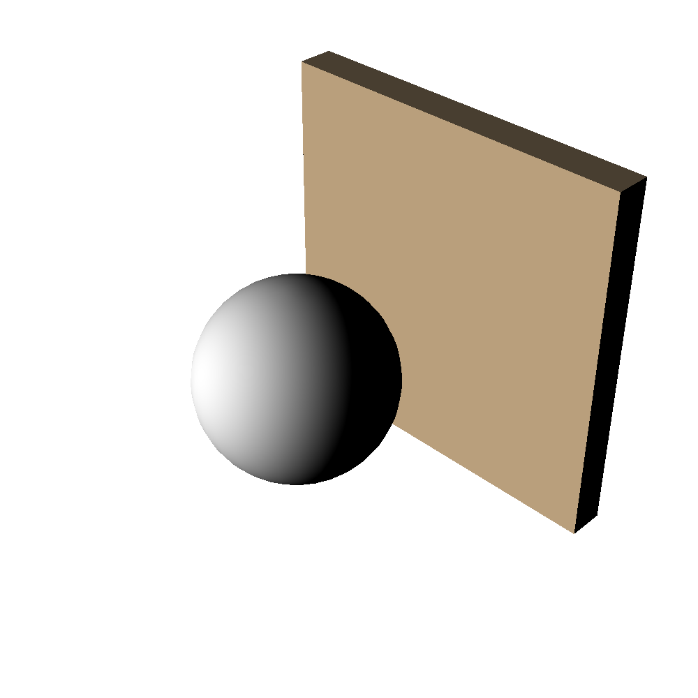 Now, enable shadows.
>>> import pyvista >>> mesh = pyvista.Sphere() >>> pl = pyvista.Plotter(lighting='none', window_size=(1000, 1000)) >>> light = pyvista.Light() >>> light.set_direction_angle(20, -20) >>> pl.add_light(light) >>> _ = pl.add_mesh(mesh, color='white', smooth_shading=True) >>> _ = pl.add_mesh(pyvista.Box((-1.2, -1, -1, 1, -1, 1))) >>> pl.enable_shadows() >>> pl.show()
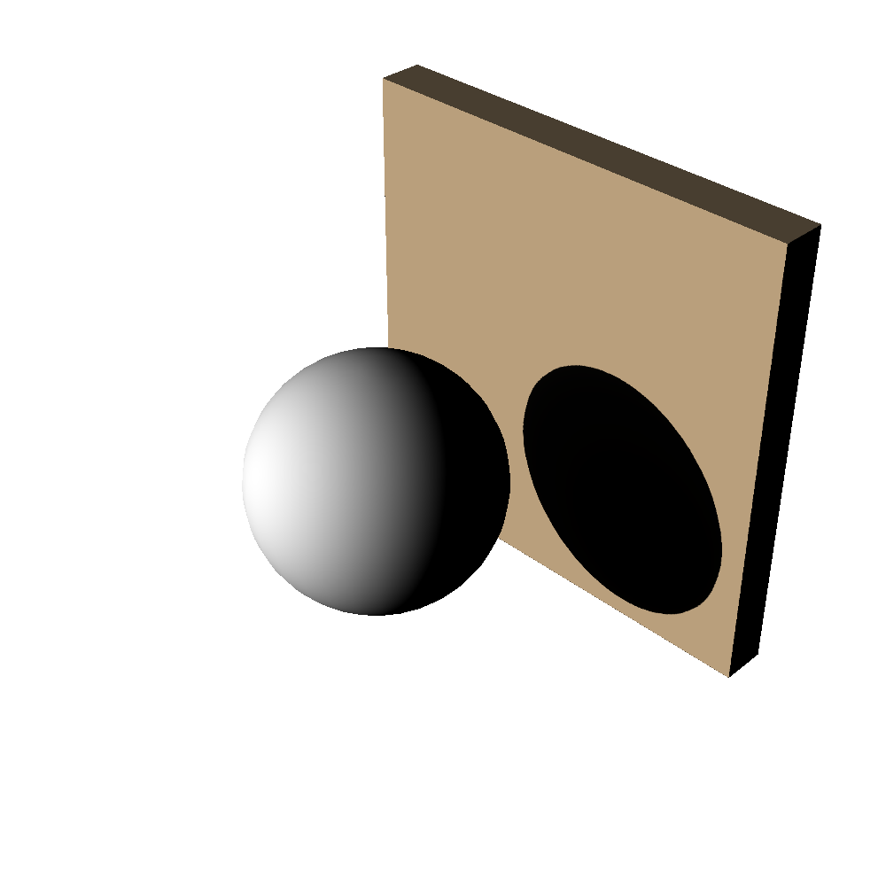
- enable_ssao(radius=0.5, bias=0.005, kernel_size=256, blur=True)[source]#
Enable surface space ambient occlusion (SSAO).
SSAO can approximate shadows more efficiently than ray-tracing and produce similar results. Use this when you wish to plot the occlusion effect that nearby meshes have on each other by blocking nearby light sources.
See Kitware: Screen-Space Ambient Occlusion for more details
- Parameters:
- radius
float, default: 0.5 Neighbor pixels considered when computing the occlusion.
- bias
float,default0.005 Tolerance factor used when comparing pixel depth.
- kernel_size
int, default: 256 Number of samples used. This controls the quality where a higher number increases the quality at the expense of computation time.
- blurbool, default:
True Controls if occlusion buffer should be blurred before combining it with the color buffer.
- radius
Examples
Generate a
pyvista.UnstructuredGridwith many tetrahedrons nearby each other and plot it without SSAO.>>> import pyvista as pv >>> ugrid = pv.UniformGrid(dimensions=(3, 2, 2)).to_tetrahedra(12) >>> exploded = ugrid.explode() >>> exploded.plot()
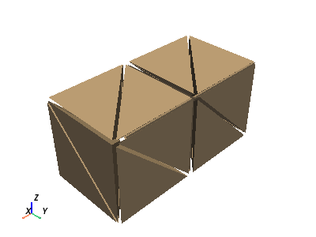 Enable SSAO with the default parameters.
>>> pl = pv.Plotter() >>> _ = pl.add_mesh(exploded) >>> pl.enable_ssao() >>> pl.show()
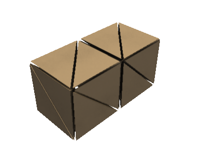
- get_default_cam_pos(negative=False)[source]#
Return the default focal points and viewup.
Uses ResetCamera to make a useful view.
- get_pick_position()[source]#
Get the pick position/area as
x0, y0, x1, y1.- Returns:
tuplePick position as
x0, y0, x1, y1.
- property has_border#
Return if the renderer has a border.
- property height#
Height of the renderer.
- hide_axes()[source]#
Hide the axes orientation widget.
Examples
>>> import pyvista as pv >>> pl = pv.Plotter() >>> pl.hide_axes()

- isometric_view()[source]#
Reset the camera to a default isometric view.
DEPRECATED: Please use
view_isometric.
- property layer#
Return or set the current layer of this renderer.
- property legend#
Legend actor.
- property length#
Return the length of the diagonal of the bounding box of the scene.
- Returns:
floatLength of the diagional of the bounding box.
- property lights#
Return a list of all lights in the renderer.
- Returns:
listLights in the renderer.
Examples
>>> import pyvista >>> pl = pyvista.Plotter() >>> pl.renderer.lights [<Light (Headlight) at 0x7f1dd8155820>, <Light (Camera Light) at 0x7f1dd8155760>, <Light (Camera Light) at 0x7f1dd8155340>, <Light (Camera Light) at 0x7f1dd8155460>, <Light (Camera Light) at 0x7f1dd8155f40>]
- property parallel_projection#
Return parallel projection state of active render window.
Examples
>>> import pyvista >>> pl = pyvista.Plotter() >>> pl.parallel_projection = False >>> pl.parallel_projection False

- property parallel_scale#
Return parallel scale of active render window.
Examples
>>> import pyvista >>> pl = pyvista.Plotter() >>> pl.parallel_scale = 2
- remove_actor(actor, reset_camera=False, render=True)[source]#
Remove an actor from the Renderer.
- Parameters:
- actor
str,vtk.vtkActor,listortuple If the type is
str, removes the previously added actor with the given name. If the type isvtk.vtkActor, removes the actor if it’s previously added to the Renderer. Iflistortuple, removes iteratively each actor.- reset_camerabool,
optional Resets camera so all actors can be seen.
- renderbool,
optional Render upon actor removal. Set this to
Falseto stop the render window from rendering when an actor is removed.
- actor
- Returns:
- bool
Truewhen actor removed.Falsewhen actor has not been removed.
Examples
Add two meshes to a plotter and then remove the sphere actor.
>>> import pyvista >>> mesh = pyvista.Cube() >>> pl = pyvista.Plotter() >>> cube_actor = pl.add_mesh(pyvista.Cube(), show_edges=True) >>> sphere_actor = pl.add_mesh(pyvista.Sphere(), show_edges=True) >>> _ = pl.remove_actor(cube_actor) >>> pl.show()
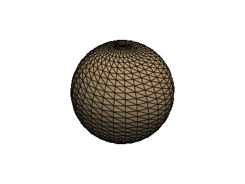
- remove_blurring()[source]#
Remove a single blurring pass.
You will need to run this multiple times to remove all blurring passes.
Examples
>>> import pyvista as pv >>> pl = pv.Plotter() >>> _ = pl.add_mesh(pv.Sphere()) >>> pl.add_blurring() >>> pl.remove_blurring() >>> pl.show()

- remove_bounding_box(render=True)[source]#
Remove bounding box.
- Parameters:
- renderbool,
optional Trigger a render once the bounding box is removed.
- renderbool,
Examples
>>> import pyvista >>> pl = pyvista.Plotter() >>> _ = pl.add_bounding_box() >>> pl.remove_bounding_box()

- remove_bounds_axes()[source]#
Remove bounds axes.
Examples
>>> import pyvista >>> pl = pyvista.Plotter(shape=(1, 2)) >>> pl.subplot(0, 0) >>> actor = pl.add_mesh(pyvista.Sphere()) >>> actor = pl.show_bounds(grid='front', location='outer') >>> pl.subplot(0, 1) >>> actor = pl.add_mesh(pyvista.Sphere()) >>> actor = pl.show_bounds(grid='front', location='outer') >>> actor = pl.remove_bounds_axes() >>> pl.show()
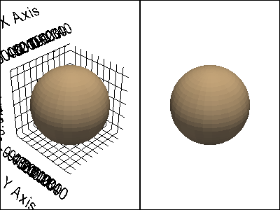
- remove_chart(chart_or_index)[source]#
Remove a chart from this renderer.
- Parameters:
Examples
First define a function to add two charts to a renderer.
>>> import pyvista >>> def plotter_with_charts(): ... pl = pyvista.Plotter() ... pl.background_color = 'w' ... chart_left = pyvista.Chart2D(size=(0.5, 1)) ... _ = chart_left.line([0, 1, 2], [2, 1, 3]) ... pl.add_chart(chart_left) ... chart_right = pyvista.Chart2D(size=(0.5, 1), loc=(0.5, 0)) ... _ = chart_right.line([0, 1, 2], [3, 1, 2]) ... pl.add_chart(chart_right) ... return pl, chart_left, chart_right ... >>> pl, *_ = plotter_with_charts() >>> pl.show()
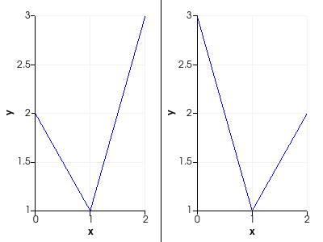 Now reconstruct the same plotter but remove the right chart by index.
>>> pl, *_ = plotter_with_charts() >>> pl.remove_chart(1) >>> pl.show()
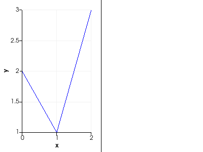 Finally, remove the left chart by reference.
>>> pl, chart_left, chart_right = plotter_with_charts() >>> pl.remove_chart(chart_left) >>> pl.show()
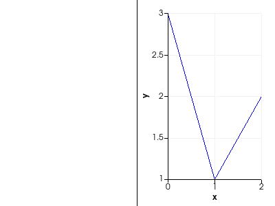
- remove_environment_texture()[source]#
Remove the environment texture.
Examples
>>> from pyvista import examples >>> import pyvista as pv >>> pl = pv.Plotter(lighting=None) >>> cubemap = examples.download_sky_box_cube_map() >>> _ = pl.add_mesh(pv.Sphere(), pbr=True, metallic=0.9, roughness=0.4) >>> pl.set_environment_texture(cubemap) >>> pl.remove_environment_texture() >>> pl.camera_position = 'xy' >>> pl.show()
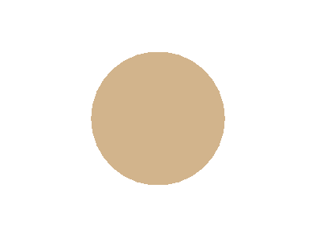
- remove_floors(clear_kwargs=True, render=True)[source]#
Remove all floor actors.
- Parameters:
Examples
Add a floor below a sphere, remove it, and then plot it.
>>> import pyvista >>> pl = pyvista.Plotter() >>> actor = pl.add_mesh(pyvista.Sphere()) >>> actor = pl.add_floor() >>> pl.remove_floors() >>> pl.show()
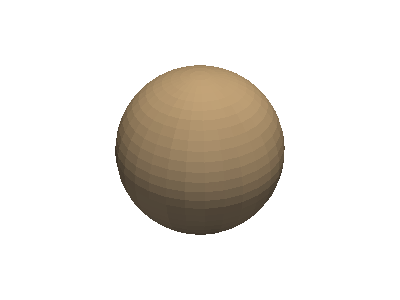
- remove_legend(render=True)[source]#
Remove the legend actor.
- Parameters:
- renderbool,
optional Render upon actor removal. Set this to
Falseto stop the render window from rendering when a the legend is removed.
- renderbool,
Examples
>>> import pyvista >>> mesh = pyvista.Sphere() >>> pl = pyvista.Plotter() >>> _ = pl.add_mesh(mesh, label='sphere') >>> _ = pl.add_legend() >>> pl.remove_legend()

- reset_camera(render=True, bounds=None)[source]#
Reset the camera of the active render window.
The camera slides along the vector defined from camera position to focal point until all of the actors can be seen.
- Parameters:
Examples
Add a mesh and place the camera position too close to the mesh. Then reset the camera and show the mesh.
>>> import pyvista >>> pl = pyvista.Plotter() >>> actor = pl.add_mesh(pyvista.Sphere(), show_edges=True) >>> pl.set_position((0, 0.1, 0.1)) >>> pl.reset_camera() >>> pl.show()
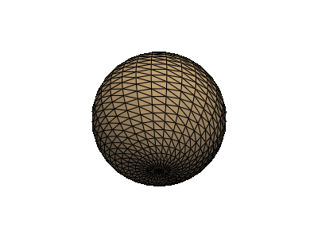
- reset_camera_clipping_range()[source]#
Reset the camera clipping range based on the bounds of the visible actors.
This ensures that no props are cut off
- set_background(color, top=None)[source]#
Set the background color of this renderer.
- Parameters:
- color
color_like,optional Either a string, rgb list, or hex color string. Defaults to theme default. For example:
color='white'color='w'color=[1.0, 1.0, 1.0]color='#FFFFFF'
- top
color_like,optional If given, this will enable a gradient background where the
colorargument is at the bottom and the color given intopwill be the color at the top of the renderer.
- color
Examples
Set the background color to black with a gradient to white at the top of the plot.
>>> import pyvista >>> pl = pyvista.Plotter() >>> actor = pl.add_mesh(pyvista.Cone()) >>> pl.set_background('black', top='white') >>> pl.show()
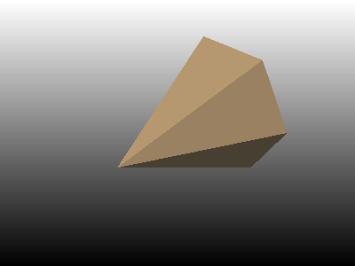
- set_environment_texture(texture, is_srgb=False)[source]#
Set the environment texture used for image based lighting.
This texture is supposed to represent the scene background. If it is not a cubemap, the texture is supposed to represent an equirectangular projection. If used with raytracing backends, the texture must be an equirectangular projection and must be constructed with a valid
vtk.vtkImageData.- Parameters:
- texture
vtk.vtkTexture Texture.
- is_srgbbool,
optional If the texture is in sRGB color space, set the color flag on the texture or set this parameter to
True. Textures are assumed to be in linear color space by default.
- texture
Examples
Add a skybox cubemap as an environment texture and show that the lighting from the texture is mapped on to a sphere dataset. Note how even when disabling the default lightkit, the scene lighting will still be mapped onto the actor.
>>> from pyvista import examples >>> import pyvista as pv >>> pl = pv.Plotter(lighting=None) >>> cubemap = examples.download_sky_box_cube_map() >>> _ = pl.add_mesh(pv.Sphere(), pbr=True, metallic=0.9, roughness=0.4) >>> pl.set_environment_texture(cubemap) >>> pl.camera_position = 'xy' >>> pl.show()
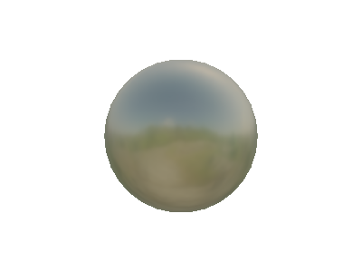
- set_focus(point)[source]#
Set focus to a point.
- Parameters:
- pointsequence
Cartesian point to focus on in the form of
[x, y, z].
Examples
>>> import pyvista >>> mesh = pyvista.Cube() >>> pl = pyvista.Plotter() >>> _ = pl.add_mesh(mesh, show_edges=True) >>> _ = pl.add_point_labels([mesh.points[1]], ["Focus"]) >>> _ = pl.camera # this initializes the camera >>> pl.set_focus(mesh.points[1]) >>> pl.show()
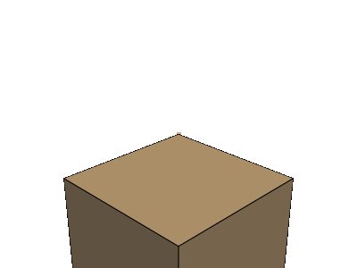
- set_position(point, reset=False)[source]#
Set camera position to a point.
- Parameters:
Examples
Move the camera far away to
[7, 7, 7].>>> import pyvista >>> mesh = pyvista.Cube() >>> pl = pyvista.Plotter() >>> _ = pl.add_mesh(mesh, show_edges=True) >>> pl.set_position([7, 7, 7]) >>> pl.show()
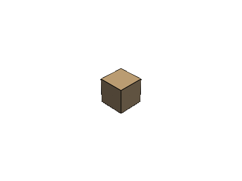
- set_scale(xscale=None, yscale=None, zscale=None, reset_camera=True)[source]#
Scale all the datasets in the scene.
Scaling in performed independently on the X, Y and Z axis. A scale of zero is illegal and will be replaced with one.
- Parameters:
- xscale
float,optional Scaling in the x direction. Default is
None, which does not change existing scaling.- yscale
float,optional Scaling in the y direction. Default is
None, which does not change existing scaling.- zscale
float,optional Scaling in the z direction. Default is
None, which does not change existing scaling.- reset_camerabool,
optional Resets camera so all actors can be seen. Default
True.
- xscale
Examples
Set the scale in the z direction to be 5 times that of nominal. Leave the other axes unscaled.
>>> import pyvista >>> pl = pyvista.Plotter() >>> pl.set_scale(zscale=5) >>> _ = pl.add_mesh(pyvista.Sphere()) # perfect sphere >>> pl.show()
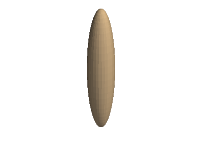
- set_viewup(vector, reset=True)[source]#
Set camera viewup vector.
- Parameters:
Examples
Look from the top down by setting view up to
[0, 1, 0]. Notice how the Y axis appears vertical.>>> from pyvista import demos >>> pl = demos.orientation_plotter() >>> pl.set_viewup([0, 1, 0]) >>> pl.show()
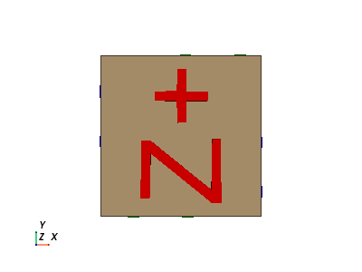
- show_axes()[source]#
Show the axes orientation widget.
Examples
>>> import pyvista >>> pl = pyvista.Plotter() >>> pl.show_axes()
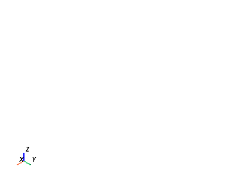
- show_bounds(mesh=None, bounds=None, axes_ranges=None, show_xaxis=True, show_yaxis=True, show_zaxis=True, show_xlabels=True, show_ylabels=True, show_zlabels=True, bold=True, font_size=None, font_family=None, color=None, xlabel='X Axis', ylabel='Y Axis', zlabel='Z Axis', use_2d=False, grid=None, location='closest', ticks=None, all_edges=False, corner_factor=0.5, fmt=None, minor_ticks=False, padding=0.0, render=None)[source]#
Add bounds axes.
Shows the bounds of the most recent input mesh unless mesh is specified.
- Parameters:
- mesh
pyvista.DataSetorpyvista.MultiBlock,optional Input mesh to draw bounds axes around.
- bounds
listortuple,optional Bounds to override mesh bounds in the form
[xmin, xmax, ymin, ymax, zmin, zmax].- axes_ranges
list,tuple,ornumpy.ndarray,optional When set, these values override the values that are shown on the axes. This can be useful when plotting scaled datasets or if you wish to manually display different values. These values must be in the form:
[xmin, xmax, ymin, ymax, zmin, zmax].- show_xaxisbool,
optional Makes x axis visible. Default
True.- show_yaxisbool,
optional Makes y axis visible. Default
True.- show_zaxisbool,
optional Makes z axis visible. Default
True.- show_xlabelsbool,
optional Shows x labels. Default
True.- show_ylabelsbool,
optional Shows y labels. Default
True.- show_zlabelsbool,
optional Shows z labels. Default
True.- boldbool,
optional Bolds axis labels and numbers. Default
True.- font_size
float,optional Sets the size of the label font. Defaults to
pyvista.global_theme.font.size.- font_family
str,optional Font family. Must be either
'courier','times', or'arial'. Defaults topyvista.global_theme.font.family.- color
color_like,optional Color of all labels and axis titles. Defaults to
pyvista.global_theme.font.color.Either a string, RGB list, or hex color string. For example:
color='white'color='w'color=[1.0, 1.0, 1.0]color='#FFFFFF'
- xlabel
str,optional Title of the x axis. Default
"X Axis".- ylabel
str,optional Title of the y axis. Default
"Y Axis".- zlabel
str,optional Title of the z axis. Default
"Z Axis".- use_2dbool,
optional This can be enabled for smoother plotting.
Warning
A bug with vtk 6.3 in Windows seems to cause this function to crash.
- gridbool or
str,optional Add grid lines to the backface (
True,'back', or'backface') or to the frontface ('front','frontface') of the axes actor.- location
str,optional Set how the axes are drawn: either static (
'all'), closest triad ('front','closest','default'), furthest triad ('back','furthest'), static closest to the origin ('origin'), or outer edges ('outer') in relation to the camera position.- ticks
str,optional Set how the ticks are drawn on the axes grid. Options include:
'inside', 'outside', 'both'.- all_edgesbool,
optional Adds an unlabeled and unticked box at the boundaries of plot. Useful for when wanting to plot outer grids while still retaining all edges of the boundary.
- corner_factor
float,optional If
all_edges, this is the factor along each axis to draw the default box. Default is 0.5 to show the full box.- fmt
str,optional A format string defining how tick labels are generated from tick positions. A default is looked up on the active theme.
- minor_ticksbool,
optional If
True, also plot minor ticks on all axes.- padding
float,optional An optional percent padding along each axial direction to cushion the datasets in the scene from the axes annotations. Defaults to 0 (no padding).
- renderbool,
optional If the render window is being shown, trigger a render after showing bounds.
- mesh
- Returns:
vtk.vtkCubeAxesActorBounds actor.
Examples
>>> import pyvista >>> mesh = pyvista.Sphere() >>> plotter = pyvista.Plotter() >>> actor = plotter.add_mesh(mesh) >>> actor = plotter.show_bounds( ... grid='front', ... location='outer', ... all_edges=True, ... ) >>> plotter.show()
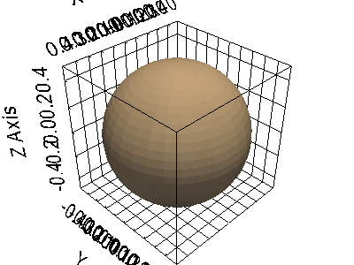
- show_grid(**kwargs)[source]#
Show gridlines and axes labels.
A wrapped implementation of
show_boundsto change default behaviour to use gridlines and showing the axes labels on the outer edges. This is intended to be similar tomatplotlib’sgridfunction.- Parameters:
- **kwargs
dict,optional See
Renderer.show_bounds()for additional keyword arguments.
- **kwargs
- Returns:
vtk.vtkAxesActorBounds actor.
Examples
>>> import pyvista >>> from pyvista import examples >>> pl = pyvista.Plotter() >>> _ = pl.add_mesh(examples.download_guitar()) >>> _ = pl.show_grid() >>> pl.show()
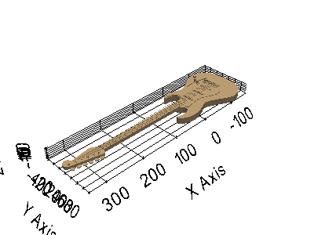
- view_isometric(negative=False)[source]#
Reset the camera to a default isometric view.
The view will show all the actors in the scene.
- Parameters:
- negativebool,
optional View from the other isometric direction.
- negativebool,
Examples
Isometric view.
>>> from pyvista import demos >>> pl = demos.orientation_plotter() >>> pl.view_isometric() >>> pl.show()

Negative isometric view.
>>> from pyvista import demos >>> pl = demos.orientation_plotter() >>> pl.view_isometric(negative=True) >>> pl.show()
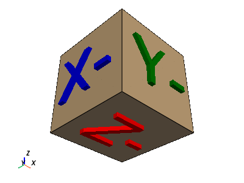
- view_xy(negative=False)[source]#
View the XY plane.
- Parameters:
- negativebool,
optional View from the opposite direction.
- negativebool,
Examples
View the XY plane of a built-in mesh example.
>>> from pyvista import examples >>> import pyvista as pv >>> airplane = examples.load_airplane() >>> pl = pv.Plotter() >>> _ = pl.add_mesh(airplane) >>> pl.view_xy() >>> pl.show()
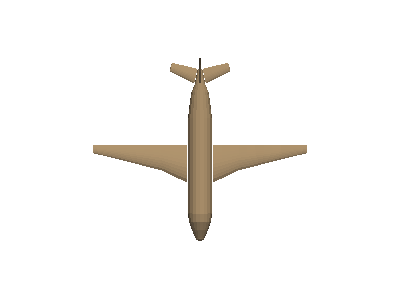
- view_xz(negative=False)[source]#
View the XZ plane.
- Parameters:
- negativebool,
optional View from the opposite direction.
- negativebool,
Examples
View the XZ plane of a built-in mesh example.
>>> from pyvista import examples >>> import pyvista as pv >>> airplane = examples.load_airplane() >>> pl = pv.Plotter() >>> _ = pl.add_mesh(airplane) >>> pl.view_xz() >>> pl.show()
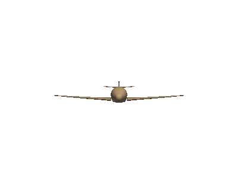
- view_yx(negative=False)[source]#
View the YX plane.
- Parameters:
- negativebool,
optional View from the opposite direction.
- negativebool,
Examples
View the YX plane of a built-in mesh example.
>>> from pyvista import examples >>> import pyvista as pv >>> airplane = examples.load_airplane() >>> pl = pv.Plotter() >>> _ = pl.add_mesh(airplane) >>> pl.view_yx() >>> pl.show()
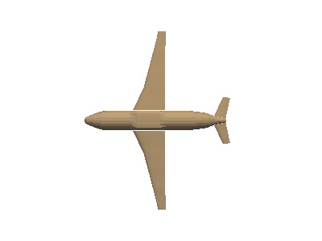
- view_yz(negative=False)[source]#
View the YZ plane.
- Parameters:
- negativebool,
optional View from the opposite direction.
- negativebool,
Examples
View the YZ plane of a built-in mesh example.
>>> from pyvista import examples >>> import pyvista as pv >>> airplane = examples.load_airplane() >>> pl = pv.Plotter() >>> _ = pl.add_mesh(airplane) >>> pl.view_yz() >>> pl.show()
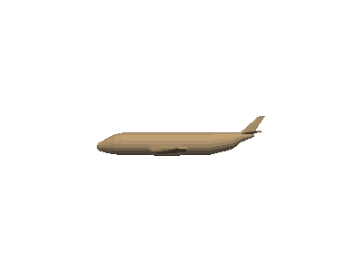
- view_zx(negative=False)[source]#
View the ZX plane.
- Parameters:
- negativebool,
optional View from the opposite direction.
- negativebool,
Examples
View the ZX plane of a built-in mesh example.
>>> from pyvista import examples >>> import pyvista as pv >>> airplane = examples.load_airplane() >>> pl = pv.Plotter() >>> _ = pl.add_mesh(airplane) >>> pl.view_zx() >>> pl.show()
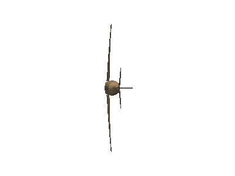
- view_zy(negative=False)[source]#
View the ZY plane.
- Parameters:
- negativebool,
optional View from the opposite direction.
- negativebool,
Examples
View the ZY plane of a built-in mesh example.
>>> from pyvista import examples >>> import pyvista as pv >>> airplane = examples.load_airplane() >>> pl = pv.Plotter() >>> _ = pl.add_mesh(airplane) >>> pl.view_zy() >>> pl.show()
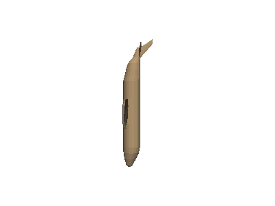
- property viewport#
Viewport of the renderer.
Viewport describes the
(xstart, ystart, xend, yend)square of the renderer relative to the main renderer window.For example, a renderer taking up the entire window will have a viewport of
(0.0, 0.0, 1.0, 1.0), while the viewport of a renderer on the left-hand side of a horizontally split window would be(0.0, 0.0, 0.5, 1.0).- Returns:
tupleViewport in the form
(xstart, ystart, xend, yend).
Examples
Show the viewport of a renderer taking up half the render window.
>>> import pyvista >>> pl = pyvista.Plotter(shape=(1, 2)) >>> pl.renderers[0].viewport (0.0, 0.0, 0.5, 1.0)
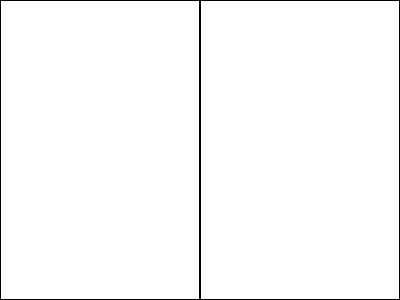
- property width#
Width of the renderer.